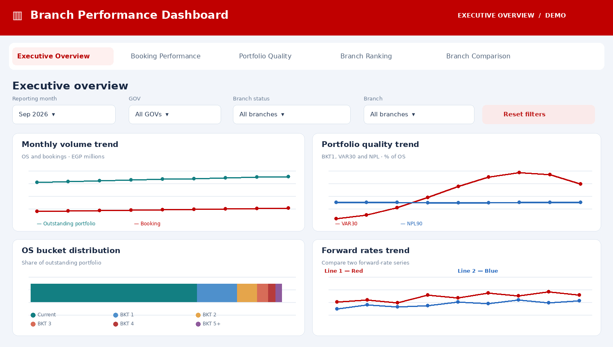

Branch Performance & Risk Analytics
An interactive executive dashboard for monitoring branch-level booking production, credit quality, and early-warning risk signals using fully fictional demonstration data.

One view across branches
Branch managers and risk teams need a consistent way to compare production, portfolio quality, and signs of deterioration without switching between disconnected reports.
Interactive monitoring
A multi-section dashboard combining KPI summaries, monthly trends, forward-rate analysis, branch filtering and performance scoring to support faster investigation.
How I built it
SQL for querying and aggregating source data; Python for processing and preparing dashboard datasets; HTML, CSS and JavaScript for the interactive web interface, charts and filters; PyCharm as the development environment.
What the dashboard explores
This is a portfolio demonstration with six fictional branches and synthetic monthly data. It does not disclose customer records, production portfolio values, or a live database connection. The scoring and metrics are presented for illustrative purposes, not as validated business outcomes.